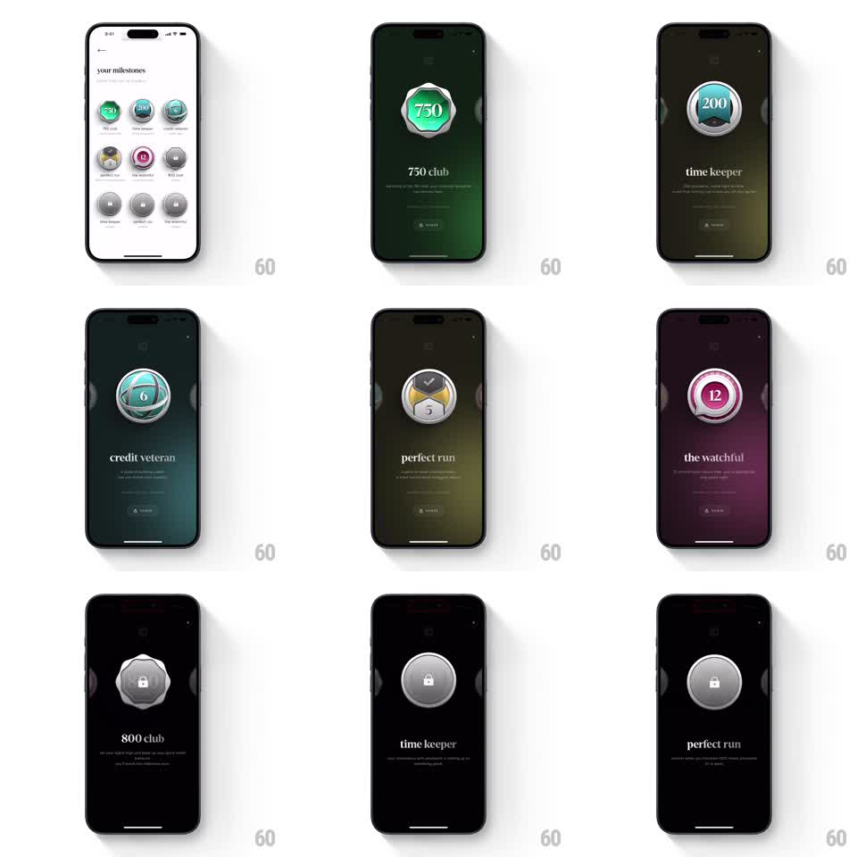

Media
Frame-by-frame

Rebuild this interaction 1:1: CRED's milestone badges - from the light "your milestones" badge grid, swiping through the detail carousel shows large 3D skeuomorphic badges (750 club in green, time keeper in blue, credit veteran, perfect run in yellow, the watchful in pink) with the full background color washing to each badge's theme, staggered title text, and locked badges (800 club, later tiers) rendered in grayscale silver.

Rebuild this interaction 1:1: CRED's milestone badges - from the light "your milestones" badge grid, swiping through the detail carousel shows large 3D skeuomorphic badges (750 club in green, time keeper in blue, credit veteran, perfect run in yellow, the watchful in pink) with the full background color washing to each badge's theme, staggered title text, and locked badges (800 club, later tiers) rendered in grayscale silver.
## Integration
Integration: stack-agnostic spec - springs given as stiffness/damping, timed motions as duration + curve; map every value to your framework and animation library of choice.
## Scene
Start: light "your milestones" grid of small circular badges (some colored, most gray/locked). Detail: full-screen badge view - a large metallic 3D badge at center (ribbed ring, enamel face: "750" green, "200" blue pocket-watch, "6" credit veteran, checkmark "5" perfect run, "12" pink the watchful), its name below ("750 club", "time keeper", "credit veteran", "perfect run", "the watchful"), description text, and an EARNED tag. Locked badges show a padlock in silver. Edge slivers of adjacent badges peek in.
## Motion spec
Pattern: badge carousel with background wash and staggered text.
- Horizontal swipe pages between badges 1:1; release snaps (spring ~300/22) with the badge rocking slightly (rotateZ +/-4deg settle).
- The background washes to the badge's theme color (green, blue, dark olive, pink) with a radial gradient from the badge outward (400ms crossfade, position-synced during drag).
- The badge enters with a spin-up (rotateY 90deg -> 0, 400ms ease-out) and metallic glint sweep (300ms).
- Title and description stagger in (translateY 10pt -> 0, opacity, 250ms, 80ms apart).
- Locked badges: no color wash (background stays near-black), padlock wiggles once (rotate +/-8deg, 300ms) on arrival.
## Calibration
- The badge is the hero at ~40% of screen height; the wash is atmospheric, never overwhelming the metal.
- Swipe velocity carries across multiple badges with flick paging.
## Reduced motion
Badges crossfade with the title (250ms); background color switches without gradient animation.
## Don't miss
- Earned vs locked is unmistakable: full color + theme wash vs silver + near-black.
- The EARNED tag has a small sparkle on colored badges.